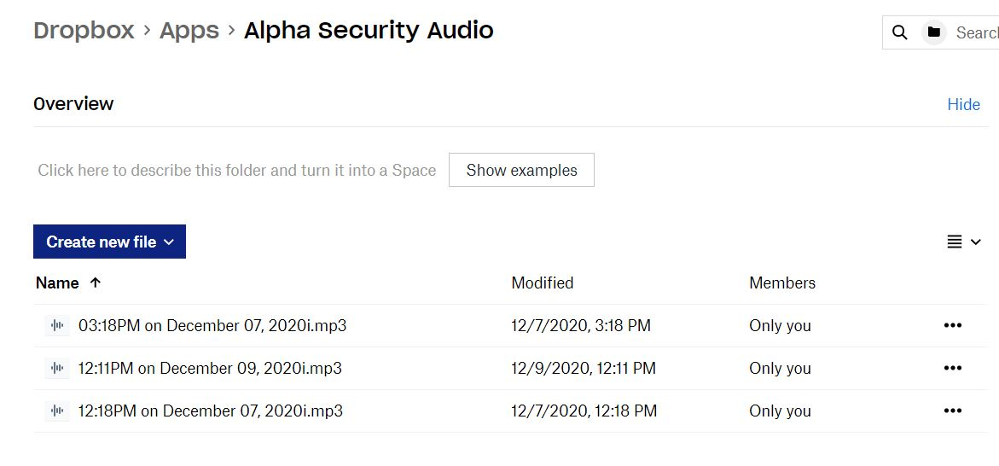

Archive | Raspberry Pi
Raspberry Pi Security System
Alpha Security was a full household security system built across four Raspberry Pis with motion detection, a laser tripwire, sound sensing, timestamped audio capture, and AWS Kinesis video streaming.


My main focus was the audio flow and server-side pieces, including USB microphone recording, Dropbox uploads, ThingSpeak integration, and the desktop application used to monitor events, store readings, and play back recordings.
It was a bigger team build and one of the more involved Raspberry Pi projects I worked on because it brought together hardware, cloud services, a local application, and alert logic in one system.